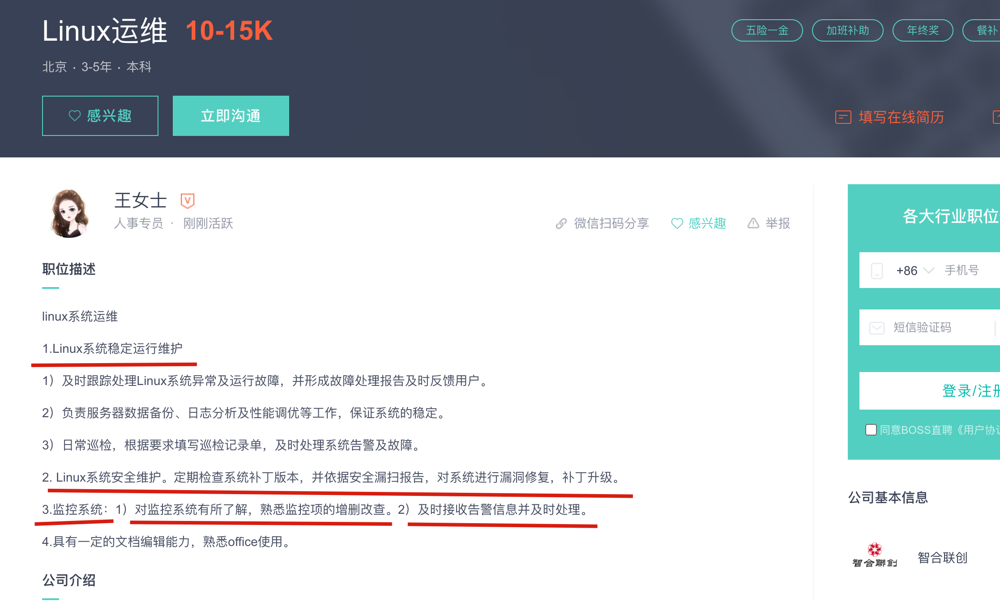
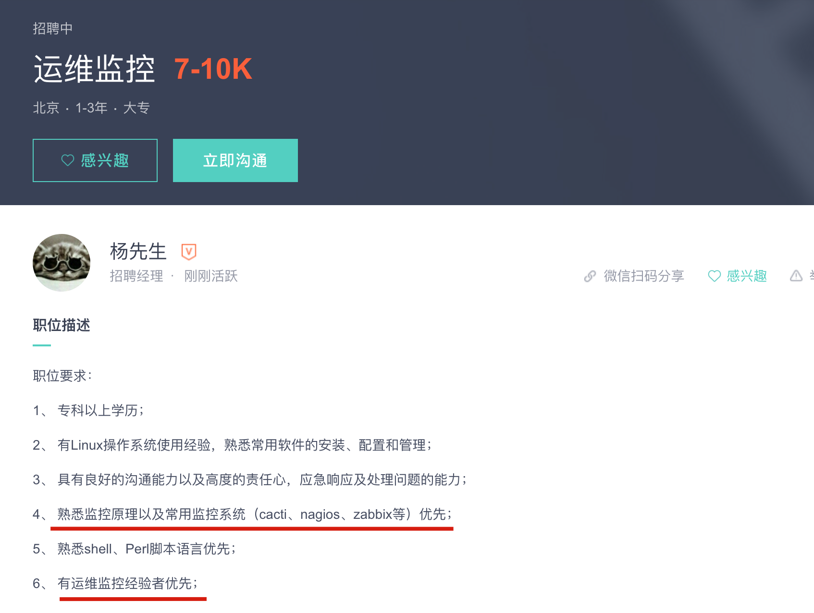
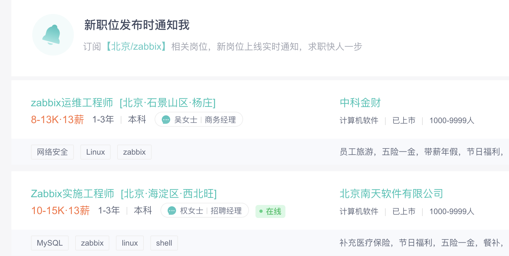
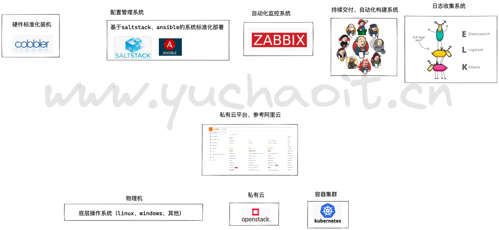
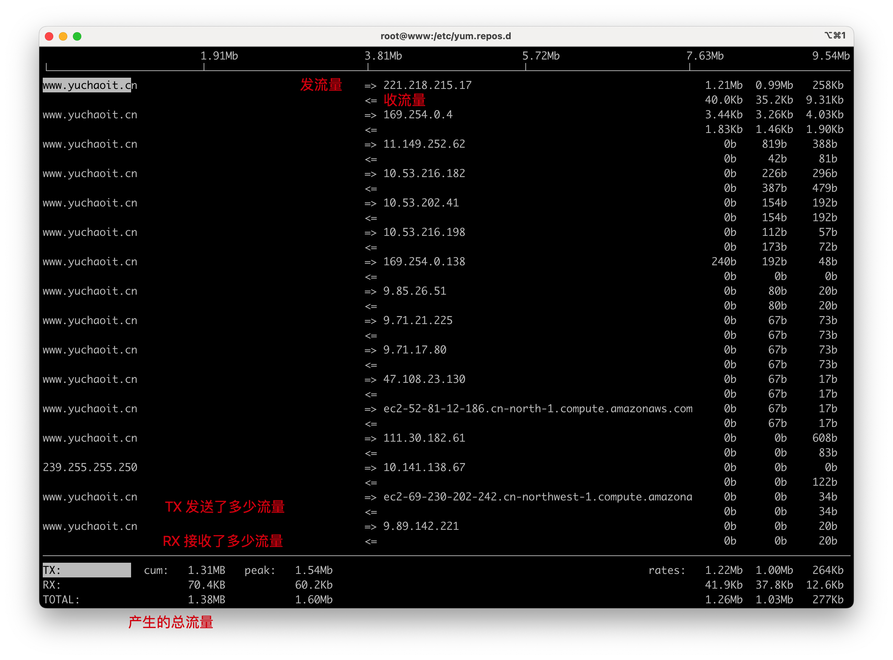

01-监控体系理论
学习本篇文章，了解运维监控系统的前世今生。
1.监控系统的重要性



1. 无论是小公司，也会招聘专门的监控运维岗、或是对运维软件有一定的技术要求
2. 或者是大公司，假设北京总部有70个运维，里面可能有20个SRE高级运维，3个devops运维开发，3个监控运维（维护zabbix、prometheus）、剩下的就是桌面运维（维护硬件资产、发放笔记本、显示器、台式机，等工作）、或者IT机房硬件运维。
监控，是运维工作里的一大重要环节。
生活里的监控
我们的生活里，离不开监控，监控能够最大程度上，发挥如下作用
- 实时监测，即使你不在电脑前，也能实时掌握监控区域情况，提高工作效率
- 事后录像查询，如果不法事件未能即使发现制止，可以调取录像，让不法分子无处遁形。
- 给与不法分子震慑作用，当不法分子意识到自己暴露在监控内，就不敢使坏。
- 远程查看，远程操控，只需要联网，即可在任何设备上，试试查看监控。
zabbix对服务器监控
为什么会有监控
运维的职责
1.保障企业数据的安全可靠。
2.为客户提供7*24小时服务。
3.不断提升用户的体验。
在关键时刻，提前提醒我们服务器要出问题了。
当出问题之后，可以便于找到问题的根源。
在有监控系统之前，运维人员需要登录服务器手动敲打命令来获取系统数据，例如前面超哥交给大家的iotop，glances，htop，free，ps等查看服务器状态的命令。
运维人员通过系统管理的命令来获取服务器数据，为了分析问题，可能会把数据复制到本地机器，通过excel等工具进行制表，画图分析服务器性能动态。
这种手动管理服务器的麻烦在于，服务器出现问题的时候，运维无法即使的发现，可能服务器内存满了，网站应用挂了，用户过来投诉才能发现，那此时老板可能会训斥运维同学一小时以上。。多么可怕。
有了监控软件之后
超哥作为一个运维，会使用监控系统查看服务器状态以及网站流量指标，利用监控系统的数据去了解上线发布的结果，和网站的健康状态。
利用一个优秀的监控软件，我们可以：
- 通过一个友好的界面进行浏览整个网站所有的服务器状态
- 可以在web前端方便的查看监控数据
- 可以回溯寻找事故发生时系统的问题和报警情况
有了一套完善的监控体系，你就可以悠闲的喝着咖啡干活，而不用提心吊胆。
监控系统是整个运维自动化体系中非常重要的环节，从服务器上架到机房，到最后下架回收，整个过程都应该有监控的存在。
- 服务器上架的硬件监控，检测线路，服务器接口状态
- 服务器运行时的监控，系统指标监控，且在出现异常的时候发出报警通知对应的人员
- 在服务器回收的时候，要取消硬件，软件的监控
并且大型公司还会对监控系统进行开发，确保有API能够方便的和其他部门同事进行协同工作。
互联网公司里的运维
一般公司里的运维，大致可以分为基础运维、应用运维、运维开发、监控组四大部分。
- 基础运维，负责IDC运维，服务器上下架，网络设备等
- 应用运维，也就是system administrator，系统管理员
- 运维开发，负责运维工具的开发，系统开发等，例如开发监控系统，代码发布系统
- 监控组，也就是24小时值班的人员，需要时刻关注服务器，网站的状况，出现问题后，第一时间联系相关运维以及研发人员。
运维工作会遇见哪些难题？
国内的互联网大厂，拥有几百，几千台服务器是很常见的，因此运维工程师的招聘需求量很大，且工作量也很大，每天在几千台服务器上敲命令，查看系统状态，发布代码，任务是非常繁琐的。
国内常见的运维新闻就是：
- 又是一年一度的双十一，今晚又是一个不眠之夜，对于程序员，运维，整个IT团队都要熬夜了（但是他们的收益也是巨大的）
- 新浪某男星又被爆出丑闻，微博又瘫痪啦！
从这样的新闻就可以看出运维人员的难处，超哥也曾彻夜不眠的维护服务器，心塞呀。
超哥也还遇见过一些难事，这些都是运维新人，会遇见的难题，需要通过不断学习运维技术，解决如下问题。
- 服务器崩溃，网站后台500挂了，由于没有监控，大伙都还不知道，直到其他部门的同事打来电话一顿凶
- 代码发布太过于繁琐，每一台机器都要自己手动执行部署，一台一台的检查
- 机器之间环境不统一，代码一样，但是这台能行，另一台就不行
- 分析问题困难，比如想要知道服务器历史状态，就比较麻烦
- 资产统计困难，作为运维新人，都不清晰公司的服务器架构，资产状况，那那能行？
提示
- 部署监控系统，实时监测，实时报警
- 自动化构建系统搭建+shell+ansible完成统一化部署
- 查看history、部署堡垒机做好历史监控、资产管理，组织架构管理
所谓运维自动化

如上的这些问题，几乎所有的运维同学都会遇见过，那么成长之后的运维，如何解决这些问题？
- 硬件标准化，包括服务器所有的硬件指标
- 软件标准化，软件版本，系统环境一致性等
- 运维自动化，监控体系，代码发布体系，CMDB。
监控体系，部署如zabbix等系统实现：
- 系统状态监控
- 应用状态监控
- 出错时即使告警
发布系统，部署CI/CD运维体系：
- 代码发布
- 代码检查
- 代码回滚，发布
服务器标准化，部署如cobbler+pxe实现自动化装机，ansible实现工程自动化配置，做到硬件，软件的标准化。
CMDB系统，也读作配置管理数据库，存储了所有的运维数据，包括服务器硬件信息，网络设备信息，属于运维的心脏。
监控系统
监控系统是所有运维人的天眼，能够帮助你盯着服务器且在第一时间发现网站的问题，发出告警，通知运维同学解决问题。
监控生命周期
运维如何从零到一、部署一套监控系统。
1.服务器上架机柜
2.进行基础设施监控
- 服务器温度，风扇转速（ipmitool命令对服务器进行远程管理，注意只能用在物理机，vmware不行）
- 存储的容量，性能（df，fdisk，dd，iotop）
- CPU性能好坏（lscpu，uptime，top，htop，glances）
- 内存容量（free）
- 网络情况（iftop,nethogs）
3.应用监控
- 数据库mysql,redis
- nginx
- php-fpm
- python
4.注意：若是服务器在维护中，还得暂停监控指标，否则监控会不停的报警。
5.监控系统在运维自动化系统中，实现如下功能
- 监控数据收集，可视化展示（图表展示，柱状图，曲线图，折线图）
- 异常数据报警
- 结合如CMDB等系统协同工作
理想化的监控软件应该支持哪些功能
一个完善且理想的监控系统，得有如下特点
- 监控系统能够自定义监控的内容，自己通过脚本采集所需的数据
- 数据需要存入到数据库，日后对该数据进行分析计算
- 监控系统可以简易，快速的部署到服务器
- 数据可视化直观清晰
异常告警通知：
- 可以定义复杂度告警逻辑，做到监控项之间的关联告警，例如程序之间的依赖检测，而不是只单独检测某一个指标
- 告警可以确认响应，让运维组内的人知道已经有人在处理告警问题了
- 报警方式可以自定义，如短信，邮件，以及微信，钉钉等
- 告警内容可以自定义，能够写入一些简单的分析，便于运维人员直观了解数据，否则还得去服务器查看
- 报警后，可以预处理一些任务，如自我修复，重启，采集数据等
协同工作：
- 监控系统有强大的API，提供给研发同学调用，其他系统调用。
- 监控数据是开放性，数据结构主流，便于解析。
- 监控可视化可以简易的插件使用，而非复杂的js文件
2.监控系统总结概述
2.1 为什么要有监控
1. 对系统不间断7*24的实时监控
2. 实时反馈、可视化展示服务器运行状态
3. 保证业务高度可用性，提前预警
4. 保证了业务的可靠性、稳定性、安全性
2.2 主流的监控软件
1. zabbix 监控王者 https://www.zabbix.com/documentation/4.0/zh/manual
2. 夜鹰系统 https://www.didiyun.com/production/ops.html
3. 普罗米修斯 https://prometheus.io/ （新时代监控王者，主要结合容器、k8s使用）
2.3 新入职后、如何着手监控工作？
以下思路作为参考，属于全链路的监控搭建，具体从哪个环节开始，以你工作需求为切入点。
1. 硬件监控、路由器、交换机、防火墙的流量监控
2. 系统资源监控、cpu、内存、磁盘、网络流量、进程存活、tcp链接数
3. 服务监控、nginx、php-fpm、tomcat、mysql、redis、django
4. web监控、nginx-status、http请求响应耗时
5. 日志监控、所有服务的日志收集、存储、分析、展示（部署ELK架构）、或者购买日志易系统
6. 安全监控、系统防火墙firewalld、web应用防火墙（nginx+lua）、牛盾(http://antid.newdun.com/#/)、安全狗（https://www.safedog.cn/）
7. 网络监控、smokeping
8. 业务监控 分析公司搞秒杀、抢购等活动时产生的瞬时流量、注册量、判断产生的价值
2.4 运维知识体系大全
【腾讯文档】运维知识体系 -v3.1 作者：赵舜东（赵班长） https://docs.qq.com/sheet/DUW5zYnhwclhyVVNF
3. 手工如何做好监控
如果你还没部署监控软件，如何做好监控工作。
1. 系统资源监控
cpu监控、w、top、sar、glances
%Cpu(s): 0.0 us, 0.0 sy, 0.0 ni,100.0 id, 0.0 wa, 0.0 hi, 0.0 si, 0.0 st
us 用户态，用户操作产生的cpu使用
sy 系统态，内核处理任务产生的cpu使用
id 空闲率
内存、free
磁盘、df、iotop
2.网络监控命令
ifconfig、route、glances、iftop、
NetHogs 是一个开源的命令行工具（类似于Linux的top命令），用来按进程或程序实时统计网络带宽使用率。
netstat
ss
网络基本查看常识

查看TCP情况
查看以建立的tcp连接
[root@www.yuchaoit.cn ~]#netstat -an |grep -i established
Active Internet connections (servers and established)
tcp 0 0 10.141.32.137:22717 221.218.215.17:64061 ESTABLISHED
tcp 0 0 10.141.32.137:44624 11.149.252.62:5574 ESTABLISHED
Active UNIX domain sockets (servers and established)
查看路由表
[root@www.yuchaoit.cn ~]#netstat -rn
查看端口常用命令
[root@www.yuchaoit.cn ~]#netstat -tunlp
4.什么是OOM（内存溢出）
记得在教大家学堡垒机部署时，由于部署需要至少4G内存，有诸多同学遇见了问题
启动时好好地，一会进程就没了？
于超老师的方案就是，“你先去看看内存把，还剩下多少”
基本都是内存不足的故障。
1. 在线上的服务器，由于长时间程序运行，消耗内存，以及用户客户端的请求不断增多，或者瞬间而来的并发流量，后台进程都可能扛不住，无法正确解析响应，导致OOM（out of memory）
或者程序bug，导致内存用光，导致OOM，服务器崩溃，都是严重的bug。
2.例如某java程序，是OOM的常客，一个应用想要运行，假设需要2G内存，但是发现内存容量不够了，程序直接崩溃结束了
内存溢出：（Out Of Memory---OOM）
系统已经不能再分配出你所需要的空间，比如系统现在只有1G的空间，但是你偏偏要2个G空间，这就叫内存溢出
例子：一个盘子用尽各种方法只能装4个果子，你装了5个，结果掉倒地上不能吃了。这就是溢出。
内存泄漏： (Memory Leak)
强引用所指向的对象不会被回收，可能导致内存泄漏，虚拟机宁愿抛出OOM也不会去回收他指向的对象
意思就是你用资源的时候为他开辟了一段空间，当你用完时忘记释放资源了，这时内存还被占用着，一次没关系，但是内存泄漏次数多了就会导致内存溢出
（这就是为什么有时候，你某一个程序，开启的时间太久，导致机器特别卡，把它关了，重启后，内存小多了。）
5.如何shell做好监控工作
shell开发章节，于超老师讲过了方案，你自己再结合 循环或crontab来实现周期性，或者实时的监控即可。